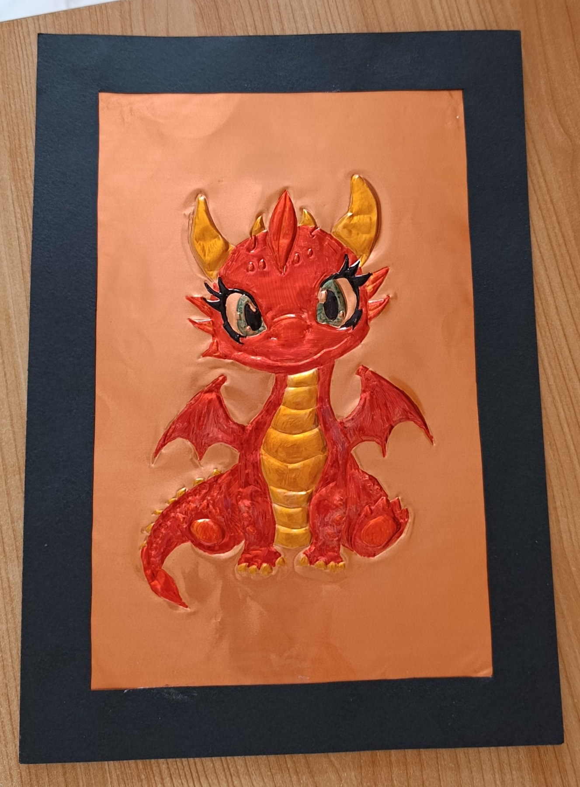
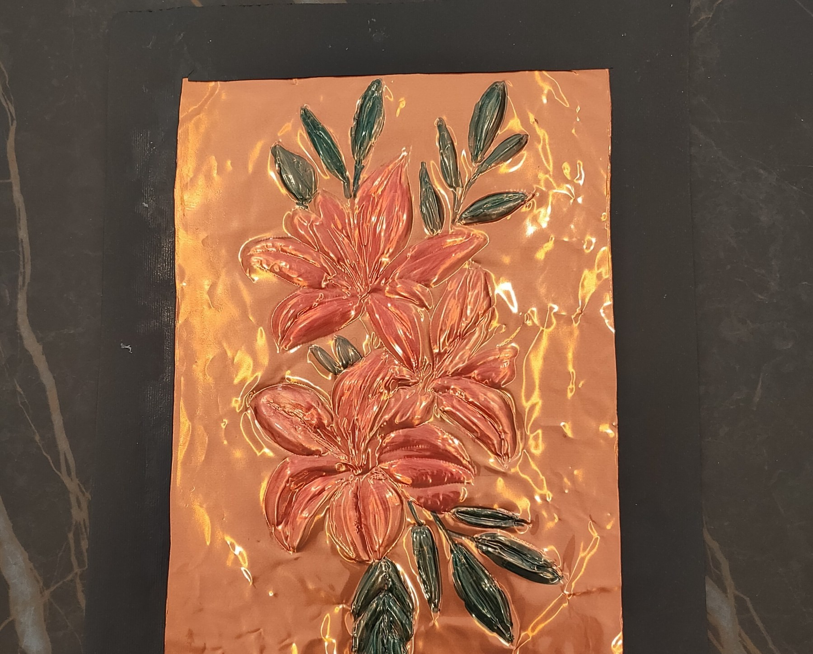
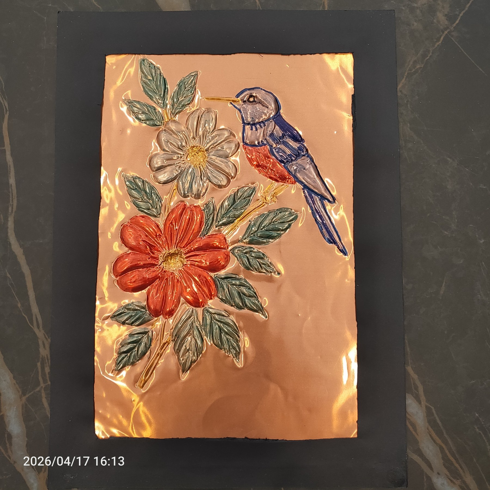
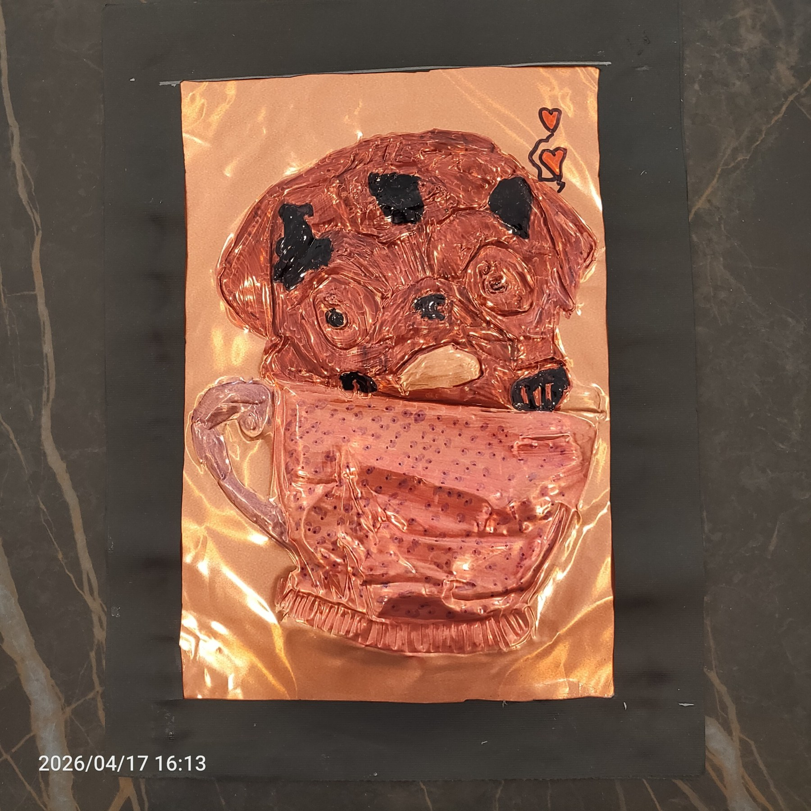
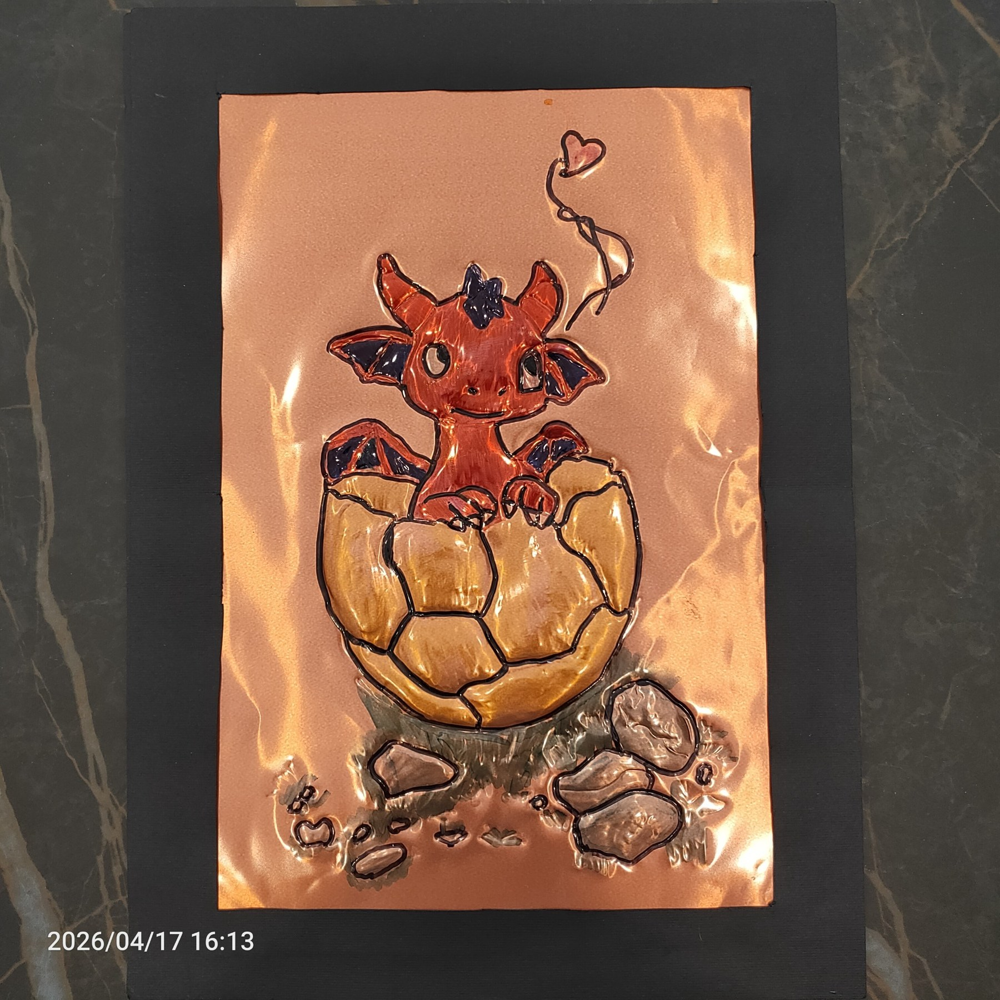
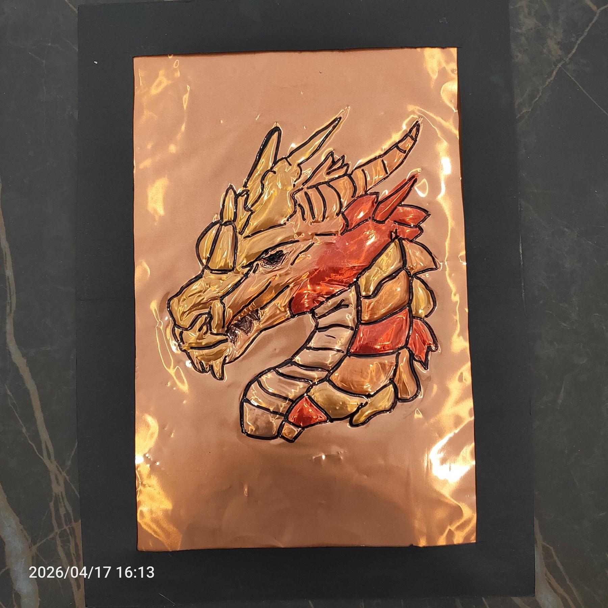
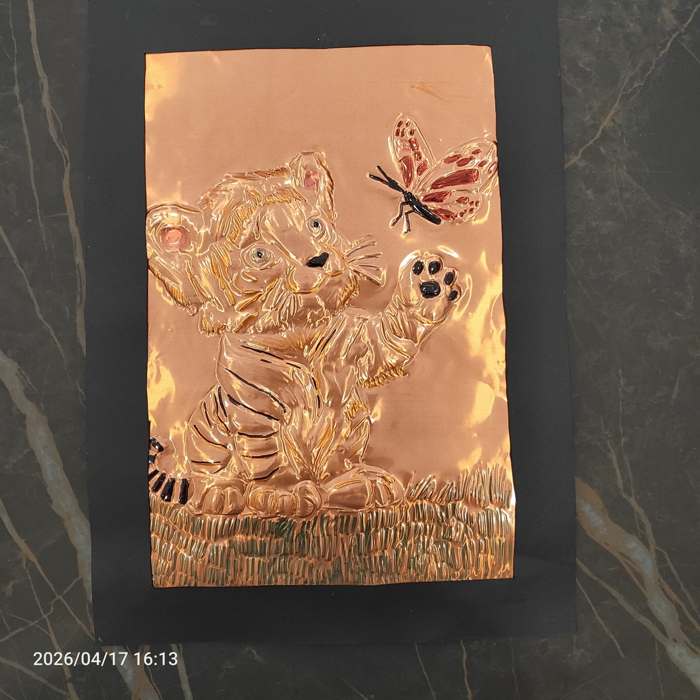
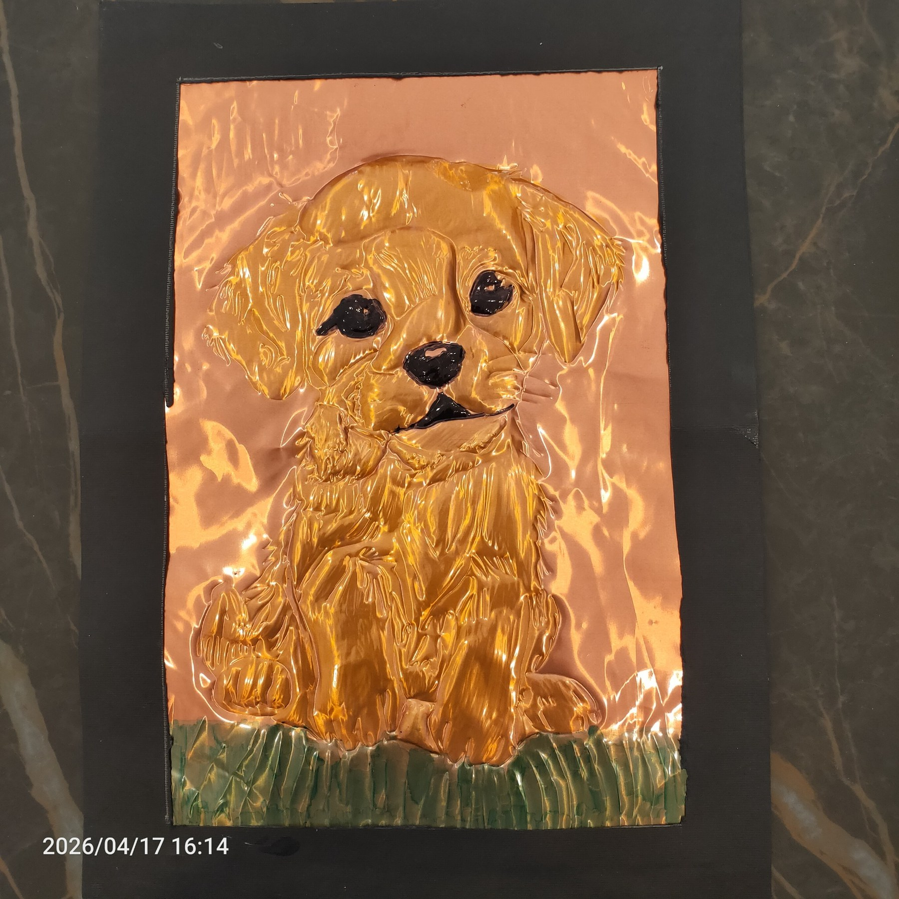
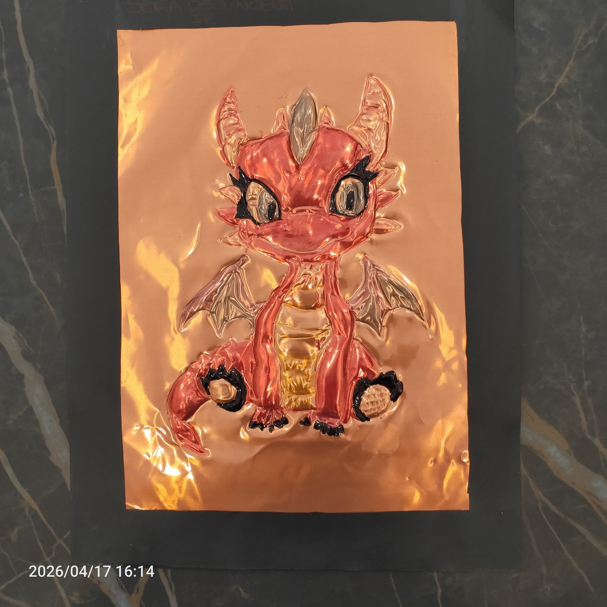
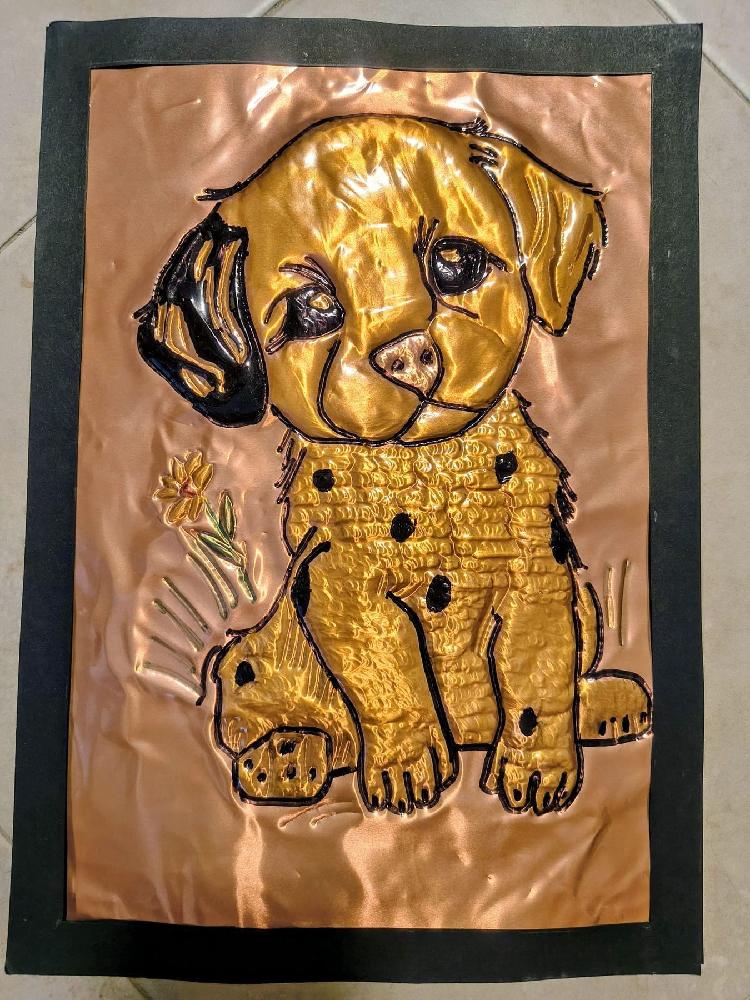

Scegliere il soggetto
Ogni alunno seleziona un’immagine semplice ma espressiva, adatta a essere tradotta in linee chiare e superfici leggibili.
Classi prime • 1A e 1E • 2025–2026
In questo laboratorio gli alunni realizzano un elaborato a rilievo su lamina color rame. Dopo aver scelto il soggetto, riportano il disegno con la carta lucida, lo lavorano con gli arnesi per il DAS per ottenere lo sbalzo, lo colorano con pennarelli indelebili e completano il lavoro con una doppia cornice in cartoncino nero.

Tecnica e materiali
Il lavoro permette di sperimentare il rapporto tra linea, pressione e rilievo, trasformando un disegno in una piccola immagine decorativa luminosa. I soggetti scelti dagli alunni sono soprattutto animali, fiori e figure fantastiche.
Procedimento essenziale
Ogni alunno seleziona un’immagine semplice ma espressiva, adatta a essere tradotta in linee chiare e superfici leggibili.
Il contorno viene trasferito sulla lamina con la carta lucida, in modo da avere una traccia precisa da seguire.
Con gli strumenti per il DAS si incide e si spinge la superficie per ottenere lo sbalzo, evidenziando dettagli e volumi.
L’elaborato viene colorato con pennarelli indelebili e poi incorniciato con due cartoncini neri.
Selezione di lavori










Nota
La galleria mostra una selezione di elaborati realizzati dalle classi 1A e 1E nell’anno scolastico 2025–2026. Sono state escluse le fotografie duplicate dello stesso lavoro e sono stati evitati riferimenti nominativi degli alunni.